Published: 2023-01-23
Source link: https://www.cnphotos.net/academy/show-108.html
Chinese-style photography uses Chinese elements as its form. It is loved for its unique charm and deep history. Chinese style is not about the force of the lens. It is about mood and atmosphere, and that mood comes from the charm of classical culture, such as traditional Chinese painting.
The mood of Chinese style depends more on the layout of the frame
and on bringing the elements together
So how do you make a photo show Chinese style? In your everyday shooting, look for Chinese-style elements around you, and you can shoot a picture with poetic charm.
1. Tile-roofed houses
Tile-roofed houses are a traditional Chinese home. They show a simple, honest, quiet beauty and carry traditional culture. Whether red brick with green tiles or gray brick with gray tiles, they give a plain, ancient, calm, and weighty feel.
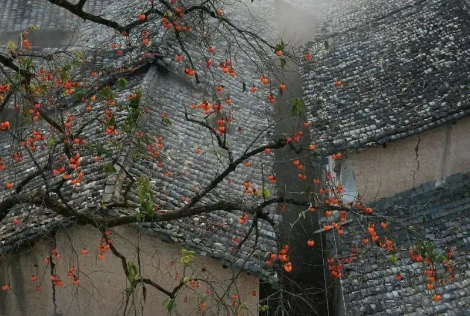
Dark gray tiles as a background. The frame is simple and full of mood.
In photography, you take the grand feel from afar and the texture up close. A wide shot should show the overall mood of the scene, while a close-up shows the unique detail of one part.
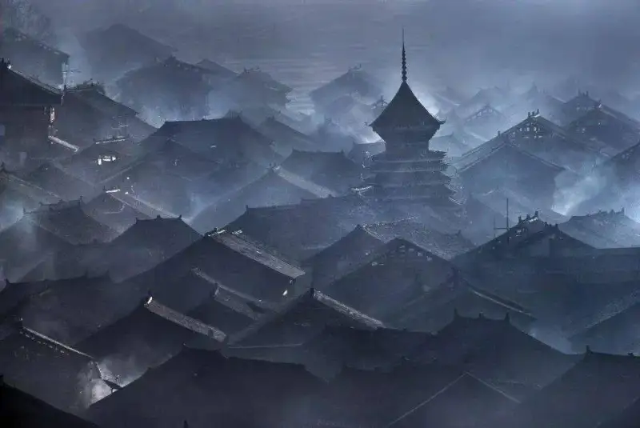
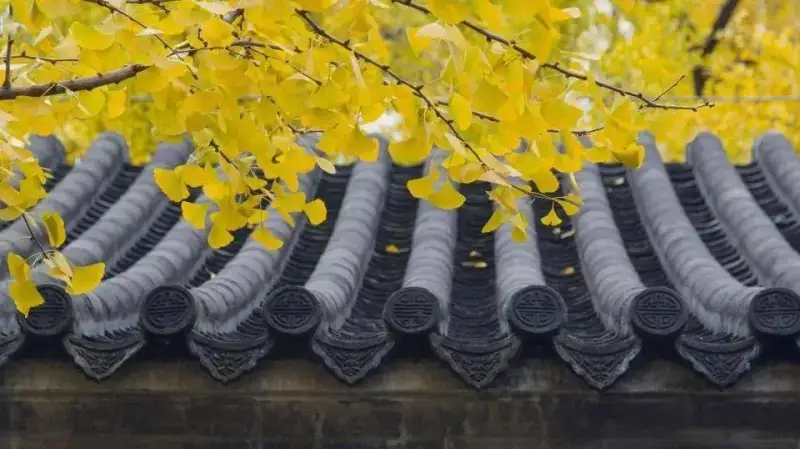
Shooting only gray brick and green tiles can look flat. Combine them with the setting, such as leaves and flowers nearby, and the frame feels alive.
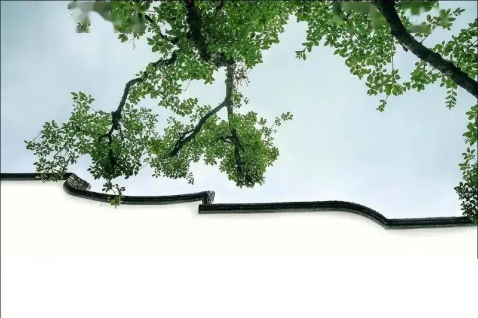
2. Floral lattice windows
In Chinese garden architecture, a lattice window with openwork patterns is called a floral window. Its design is rich, clever, and finely carved. With many patterns and lucky meanings, it decorates plain heavy walls and carries a strong cultural feel.
As interest in traditional culture grows, the floral window has become a link between old and new. It is widely used in new-Chinese-style design and in old towns.
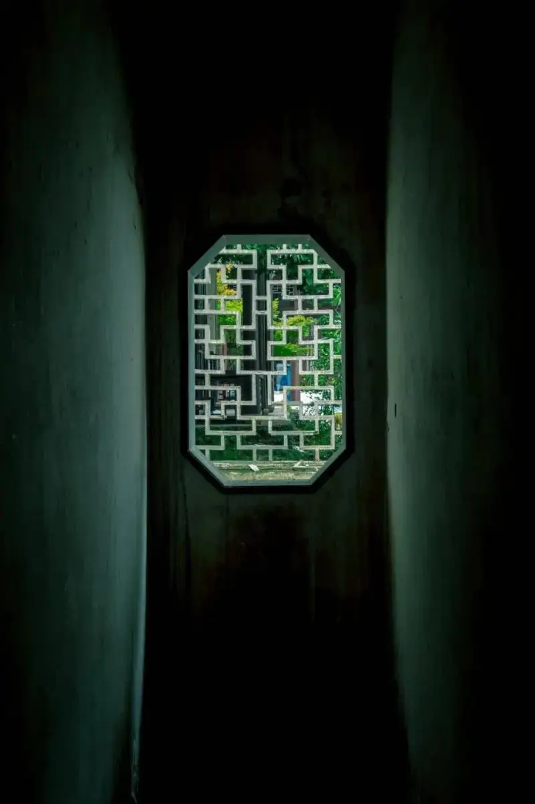
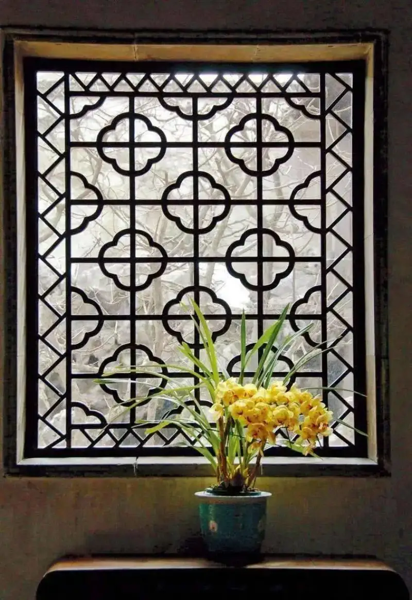
These classical windows are beautiful in themselves. The view by a window is usually good, and in scenic old towns the window seats are carefully chosen and placed.
Find a window and shoot the world outside through it. A frame like that will not disappoint.
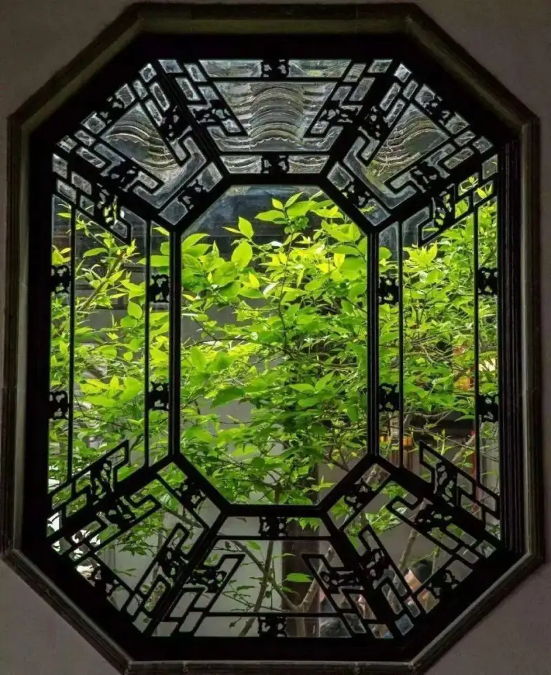
Using a window as a foreground frame gives the shot a built-in beauty.
Besides the window itself, add leaves and flowers nearby, and the frame comes alive. Whether you shoot from inside out or outside in, bright plants pair easily with a window. The dark window frame is a neutral color, so it works with any color.
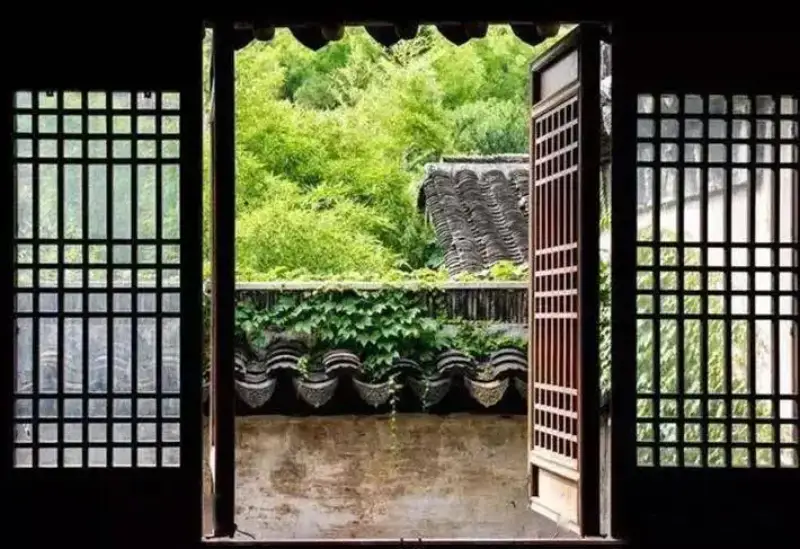
Paired with the view outside, the frame has both a framed structure and a lively feel. Add a distinctive tile-roofed house, and the Chinese mood is complete.
A floral window as background, with trees and snow in front, adds a cultural touch.
There is another kind of window, like the moon gate in a Chinese garden, also called an open window. As you step into a courtyard, walk a corridor, or lean by a window, it can lead your body or your thoughts to another space.
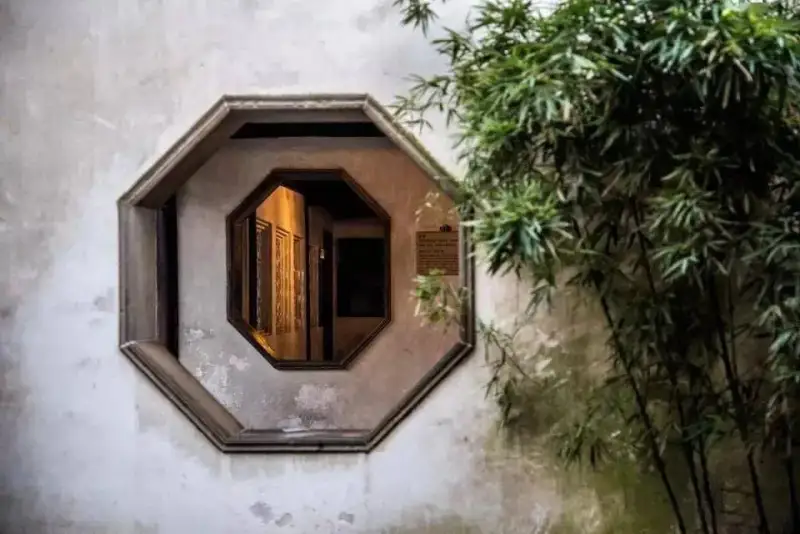
An open window leads the eye into the interior, and bamboo adds color to the frame.
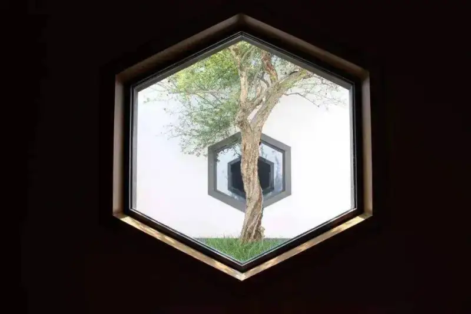
The doorway is itself a unique view. With a moon gate, you glimpse the scene before you even step through.
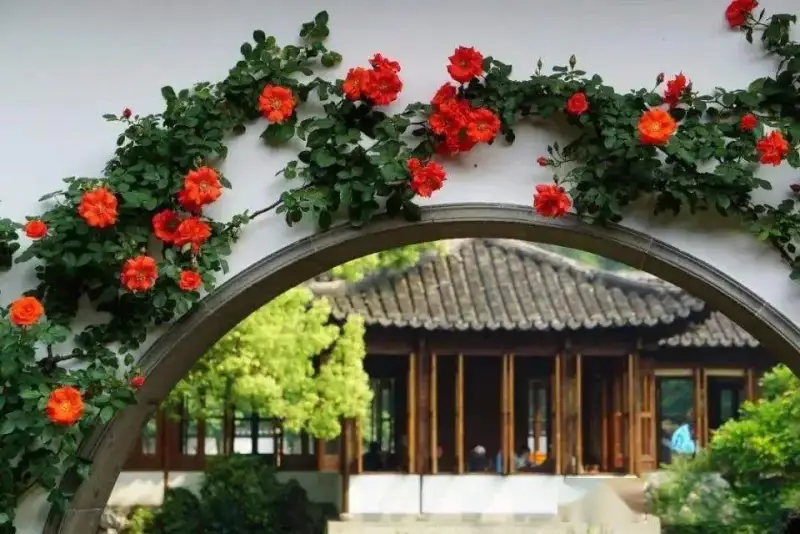
3. Red walls
In Chinese tradition, red means luck and joy. As early as 7000 years ago, our ancestors dyed hemp cloth red for rituals and to drive away spirits. Red stands for the power of life, dawn, and contentment, and it brings comfort and joy.
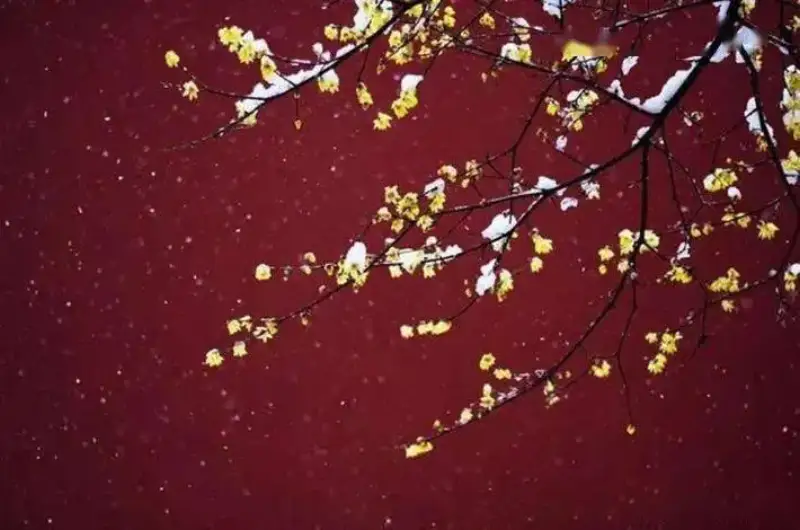
A red wall as background simplifies the frame and gives a strong contrast.
When people think of red walls, the red walls and yellow tiles of the Forbidden City come to mind. Besides the Forbidden City, many temples and old buildings have such red walls. A wide red wall as background works well for flowers, trees, snow, or light and shadow. It simplifies the frame and gives strong contrast.
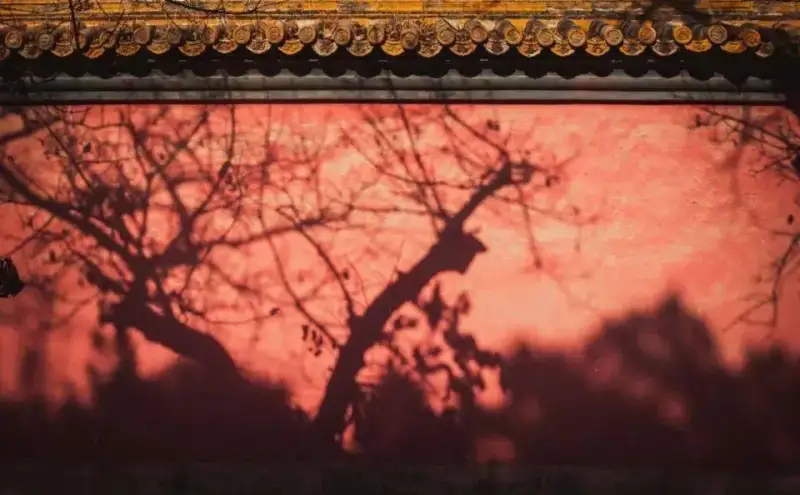
A weathered red wall with swaying tree shadows seems to tell the story of history.
4. Lanterns
The lantern is an old Chinese craft. It began in the Western Han Dynasty more than 2000 years ago. Around the Lantern Festival on the 15th day of the first lunar month, people hang red lanterns that stand for reunion to set a festive mood. The lantern later became a symbol of Chinese celebration. Types include palace lanterns, gauze lanterns, and hanging lanterns.
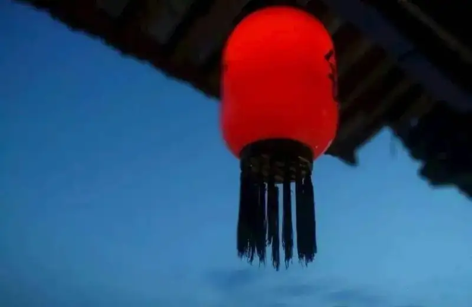
You often see red lanterns by classical windows and eaves. It is a classic pairing and a unique part of Chinese culture, so use it well. Foreground, lantern, and old house together make a calm, quiet mood. The red lantern against a cool setting creates contrast and looks great.
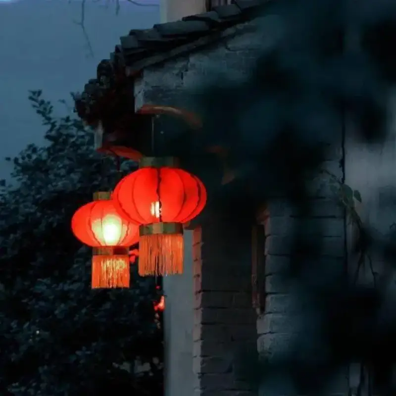
Indoors or out, a red lantern as a small accent is very eye-catching and brings the frame to life.
5. Trees
Trees are a favorite subject for many photographers. In autumn and winter, a tree loses its leaves and shows only the trunk, a few fruits, or some leftover leaves. The lines of the branches are a picture in themselves, and with a little work they make a fine ink-painting subject.
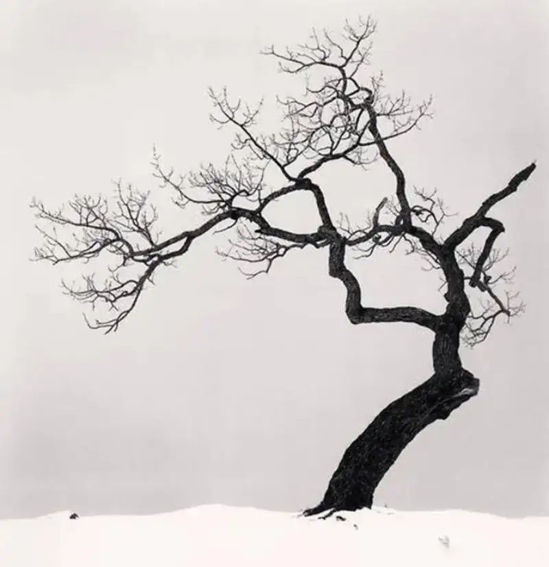
Trees are the most common subject. Notice the trees around you, pick branches with a nice shape, and use them as a foreground. The result is good. In the photo below, a persimmon tree in front of Huizhou-style buildings blends with them into a beautiful Chinese pastoral painting.
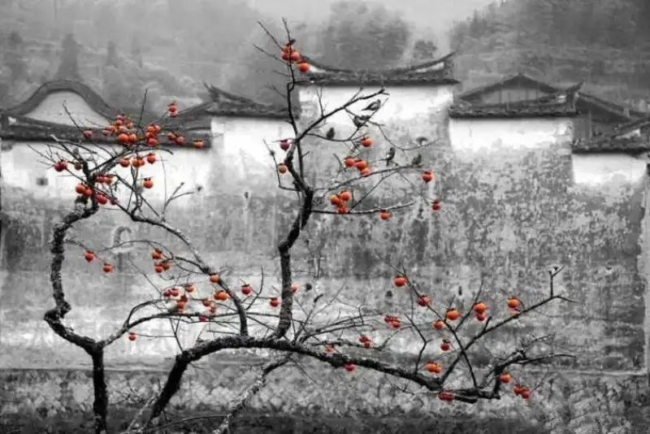
Using branches as a foreground leading line is a common trick. If you blend the branches with the setting, you can get an ink-wash effect.
6. Fallen leaves
Fallen leaves are the best subject for masters of Chinese painting. With a few strokes, the picture comes alive. In painting, fallen leaves are often just one or two. When you shoot, keep the frame simple and focus on formal beauty in composition.
Using a colorless setting to set off color is a common trick. It makes the subject stand out and adds the feel of Chinese ink painting. Bright red leaves with a creative wide-angle low shot bring a dull setting to life.
7. Reeds
Many photographers like reeds. They look good and photograph well. But reeds alone look plain. Use reeds as a foreground, and show them through a blur-to-sharp range, so the frame has more depth.
Multi-exposure adds flying birds to the frame and gives it the charm of Chinese ink painting.